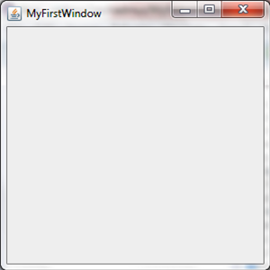
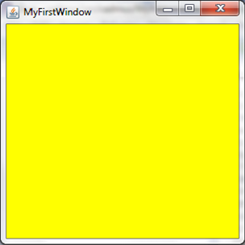

MyFirstWindow
Chapter 2 is all about Graphics. To make your first GUI (graphical user interface) application you need to import the package javax.swing.JFrame. Here is an example of an empty window:
public class MyFirstWindow extends JFrame {
public static void main(String[] args) {
new MyFirstWindow();
}
public MyFirstWindow() {
setSize(300, 300);
setTitle("MyFirstWindow");
setVisible(true);
setDefaultCloseOperation(EXIT_ON_CLOSE);
}
}
Here, the class MyFirstWindow inherits, thanks to the extends keyword, all of properties and methods of the JFrame. That means an object of a MyFirstWindow is also, in essense, and object of JFrame. The difference is in the custom methods of MyFirstWindow such as the constructor, where the title, size, and visibility are set. You may say that setTitle, setSize, and setVisible do not exist, but they are extended JFrame methods. setDefaultCloseOperation(EXIT_ON_CLOSE), meanwhile just ensures that the Java app doesn't lay running hidden in the background.
The code above should output this when run:

Colouring these Windows
These windows are not limited to a dull, boring grey, in fact these windows can be set to pretty much any colour under the Sun. To do this you will have to import Color, using the import:
import java.awt.Color;
To use this import you will have to use the following syntax:
getContentPane().setBackground(Color.YELLOW);
// this will create a yellow window, however you can replace this with other colours.
As you can see, you can change the colour of your background using the method setBackground(Colour). There are wide range of existing colours like:
Color.PINK, Color.GREEN, Color.BLACK, Color.Yellow, Color.BLUE, Color.RED, Color.WHITE, Color.CYAN, Color.ORANGE
It is unfortunate that due to the current American political hegemony, Java Swing has chosen to propagate their establishment's idiocratic lexical fallacies i.e. by spelling colour without the "u". If you were confused, don't worry colour is still spelt with a "u" in proper English.
This particular piece of code would putput the following:

Ex 1
Copy & run the code. Play around with setSize, setTitle, setVisible and setBackground().
Ex 2
Research the setResizable() method and create another window called MySecondWindow which cannot be resized.
HINT: You don't actually need to research it, it either can or cannot be resized.